Every screenshot has red numbered markers. Under it, a list with the same red numbers tells you what each marked thing is and does.
Grey numbered lists are step-by-step instructions: do them in order.
Boxes: green “Rookie tip” for beginner advice, blue “Good to know” for details, yellow “Heads up” for limits and permissions.
The screenshots come from a demo company, so names and numbers will differ from yours. Your own account starts completely empty (chapter 3).
Chapter 1
CRM in plain English
A CRM (Customer Relationship Management) system is a shared address book and to-do list for everyone who talks to customers. It remembers every person, every conversation and every sale in progress, so nothing falls through the cracks.
The words you’ll see everywhere
Word
What it means
Example
Lead
Someone who might become a customer but hasn’t been checked out yet.
A person who filled in your website form.
Contact
A real person you do business with. Leads become contacts once they’re qualified.
Priya Shah, VP Operations at Acme.
Company
The organization a contact works for.
Acme Industries.
Deal
A sale you’re trying to win, with a value in money.
“Acme platform rollout — $48,000”.
Pipeline
The ordered steps a deal goes through until it’s won or lost.
One step in the pipeline. Each has a win probability (how likely deals at that step are to close).
Proposal = 50%.
Weighted value
Deal value × win probability. A realistic forecast.
$48,000 at 50% = $24,000.
Activity
Something you did with a customer: a call, email, meeting or note.
“Discovery call, 30 min, connected”.
Task
Something you still need to do, with a due date.
“Send proposal by Friday”.
Ticket
A customer’s support request, with a deadline to resolve it (SLA).
“#12 Cannot export CSV — urgent”.
Quote
A priced offer sent to a customer, built from your products.
“Q-0001 — $52,800”.
Campaign
A marketing effort that brings in leads (webinar, ads, event).
“SaaS Summit booth”.
Owner
The team member responsible for a record.
Sam owns 10 deals.
Quota
A salesperson’s monthly revenue target.
$25,000 per month.
How it all connects
Lead → (you qualify and convert it) → Contact + Company + Deal → (you move the deal through stages, logging activities and doing tasks, maybe sending a quote) → Won 🎉 → the contact becomes a Customer → if they need help, they open a Ticket.
Rookie tipYou don’t have to use every feature on day one. Start with Contacts, Deals and Tasks. Add the rest once those feel natural.
Chapter 2
Signing up and signing in
The home page is where new people create an account and existing users sign in.
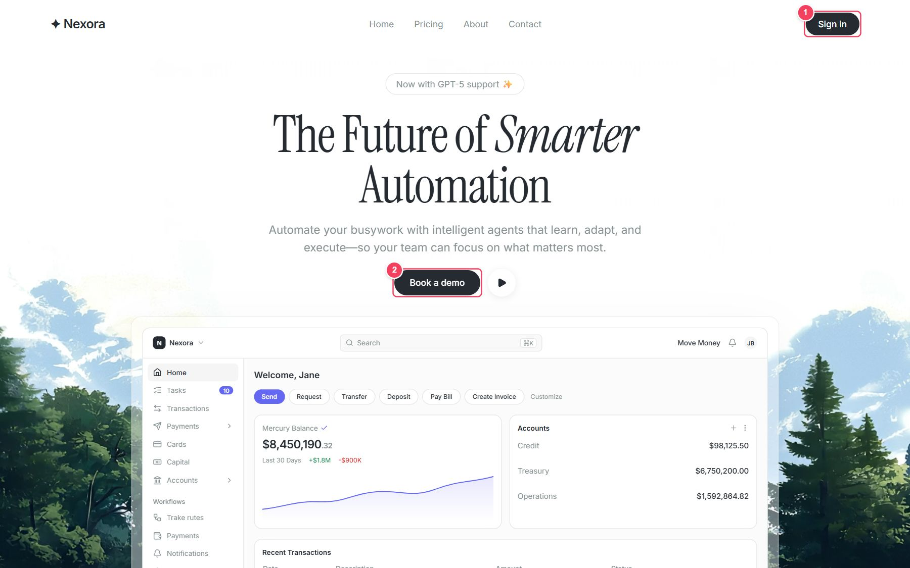
The Nexora home page.
Sign in: for people who already have an account.
Book a demo: opens the sign-up form to create a new account and workspace.
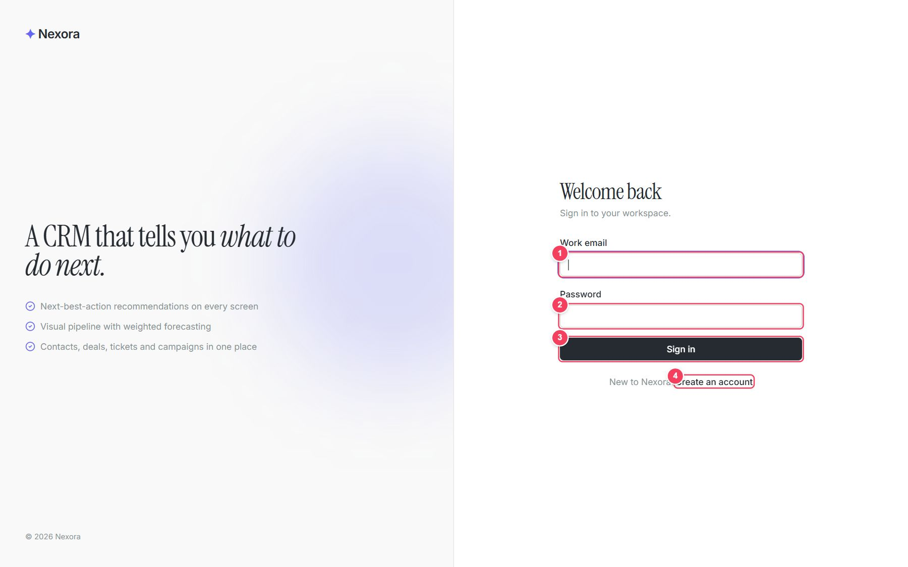
The sign-in page.
Work email you signed up with.
Password.
Sign in (or press Enter).
Create an account if you don’t have one yet.
Create an account
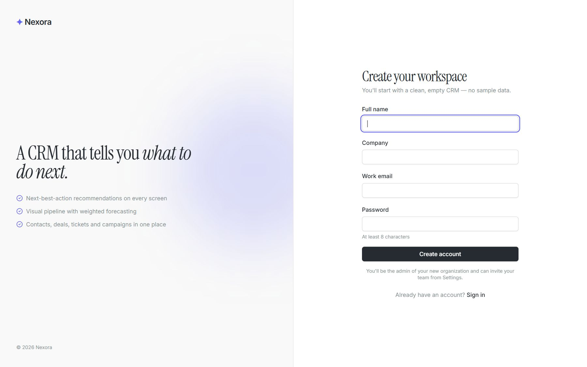
Fill in your full name, company name, work email and a password (at least 8 characters).
Click Create account. You’re signed in straight away.
You become the Admin (the boss account) of a brand-new, empty workspace for your company.
Good to knowIf a colleague already uses Nexora, don’t sign up separately: ask your admin to add you (chapter 23). Signing up always creates a new, separate company workspace.
Chapter 3
Your first five minutes
A brand-new account is completely empty: no sample contacts, deals or numbers. Nexora shows a checklist to get you going.
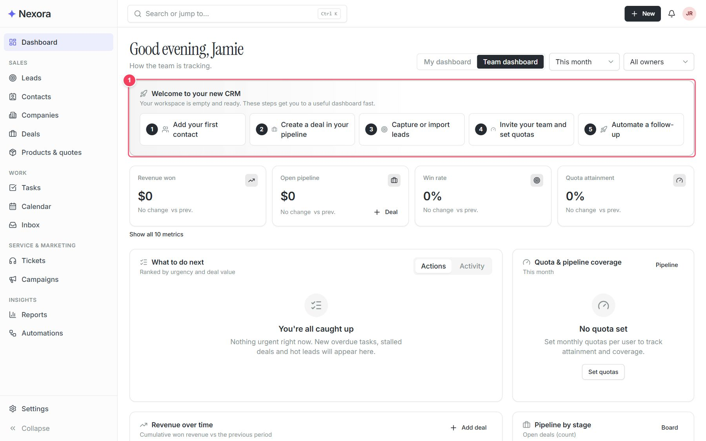
What a new account’s dashboard looks like.
Welcome to your new CRM: five shortcut buttons. Click any of them to jump straight to that step: add a contact, create a deal, capture leads, invite your team, automate a follow-up. The checklist disappears once you add your first contact, deal or lead.
All numbers show $0 and 0%, and charts show friendly “nothing yet” messages. That’s normal and fills in as you work.
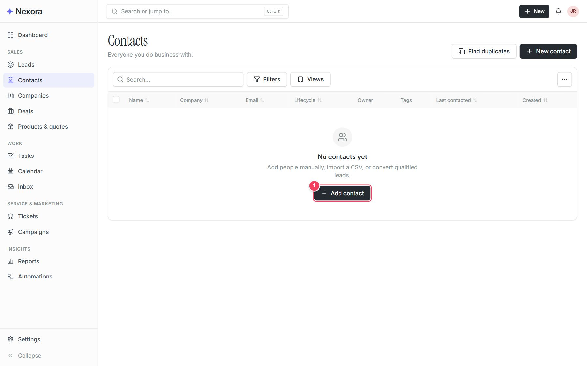
An empty list always tells you how to add your first record.
Add contact: creates your first contact. Every empty list has a similar button.
Rookie tipThe only thing a new account contains is one empty pipeline called Sales Pipeline with five stages, because deals need somewhere to live. You can rename or change the stages later (chapter 23).
Chapter 4
The screen layout
Every page has the same frame: a menu on the left, a toolbar along the top, and the page content in the middle.
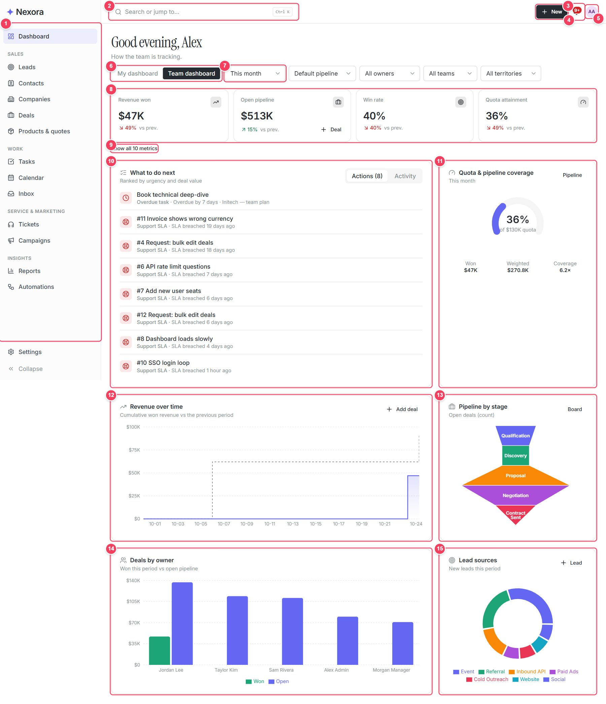
Sidebar menu: every section of the CRM, grouped into Sales, Work, Service & marketing and Insights. The highlighted item is the page you’re on. Settings and Collapse (shrinks the menu to icons) sit at the bottom.
Search or jump to…: finds any record or page (chapter 5).
+ New: create any kind of record from anywhere.
Bell: your notifications. The red number is how many are unread.
Your avatar: profile, settings, light/dark theme and sign out.
–15 are parts of the dashboard, explained in chapter 6.
Reports, Automations (rules that do work for you).
Chapter 5
Search, New, notifications and your menu
Search everything (Ctrl + K)
Click Search or jump to… or press Ctrl + K (⌘ + K on a Mac).
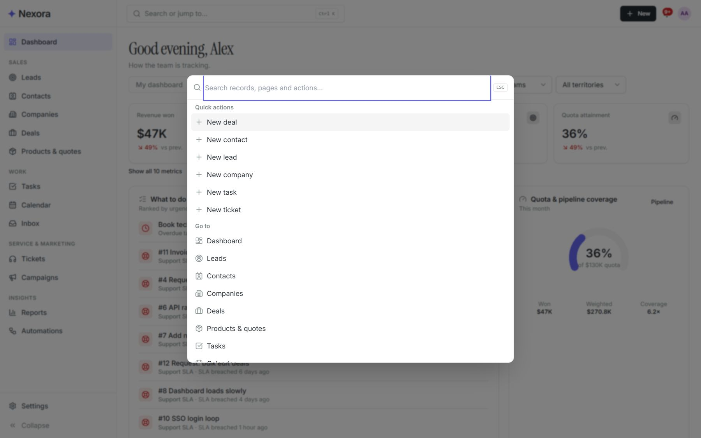
Before typing: quick actions and every page.
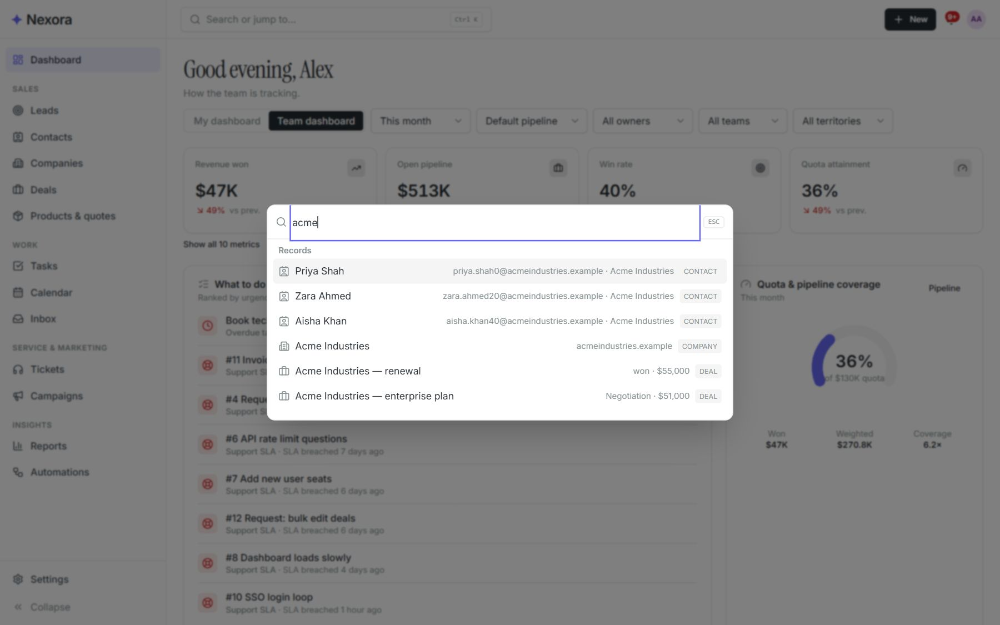
After typing “acme”: matching contacts, companies, deals…
Type at least two letters of a name, email, company, deal title or ticket number.
Use the ↑↓ arrow keys to pick a result and Enter to open it, or click it.
With nothing typed, pick a Quick action (New deal, New contact…) or a page under Go to.
Press Esc to close.
Create anything: + New
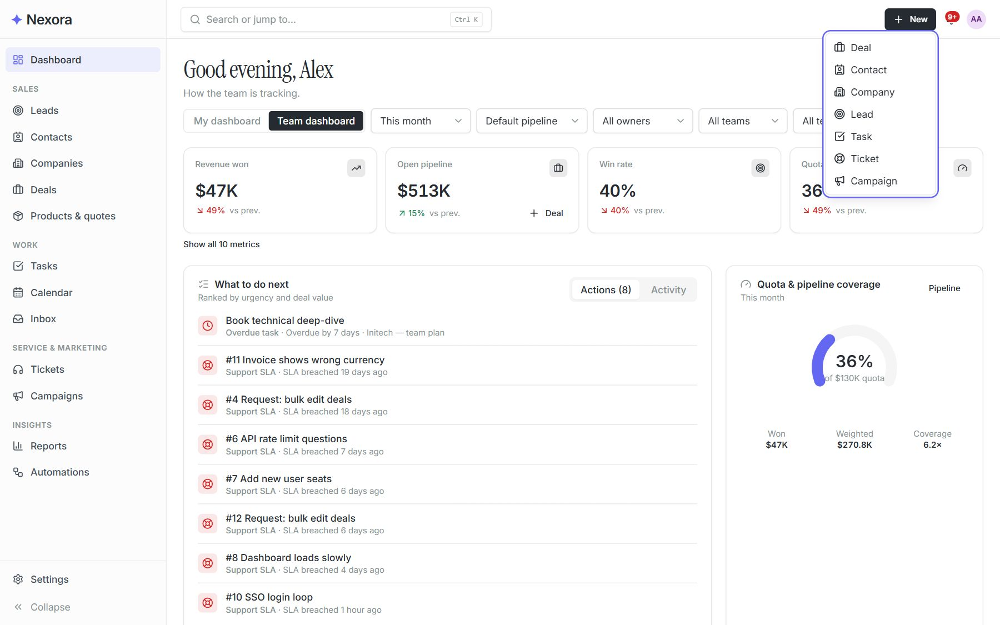
The + New menu.
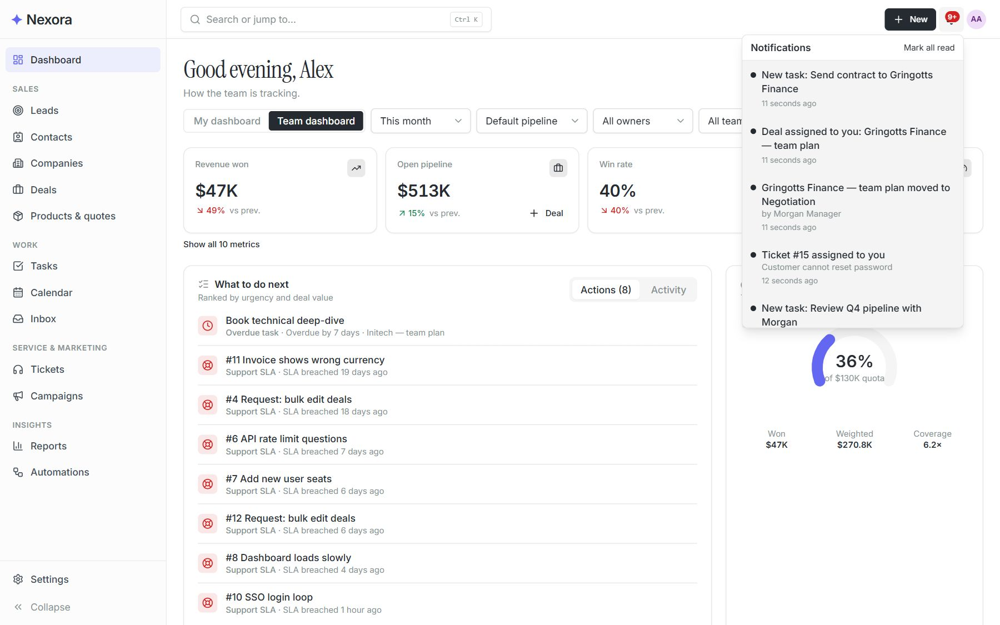
The notifications panel.
+ New lets you add a Deal, Contact, Company, Lead, Task, Ticket or Campaign from any page. After you save, Nexora opens the record you just made.
Notifications (the bell)
You’re told when someone assigns you a record or task, moves or closes your deal, when a task reminder is due, when a support ticket is close to or past its deadline, and when an automation wants your attention. Unread items have a blue dot. Click one to open it, or click Mark all read. The list refreshes every 30 seconds.
Your account menu
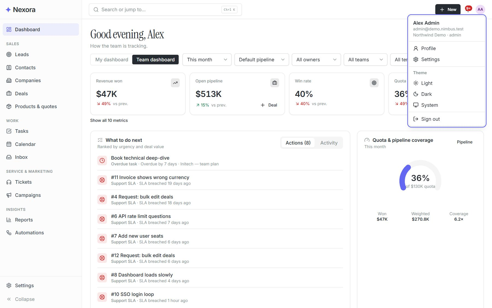
Click your avatar (top right) to see your name, company and role, open Profile or Settings, switch the theme (Light, Dark or System, which follows your computer) and Sign out.
Chapter 6
The dashboard
Your home page answers two questions: how are we doing? and what should I do next? Look back at the big screenshot in chapter 4; the numbers below refer to it.
My dashboard / Team dashboard. My shows only your own work. Team shows your team (managers) or the whole company (admins). Sales reps only have My.
Date range: This month, Last 30 days, This quarter, This year. Next to it (team view) you can also filter by pipeline, owner, team and territory.
Key numbers: revenue won, open pipeline, win rate and quota attainment. The small arrow shows the change against the previous period: green is better, red is worse.
Show all 10 metrics: reveals six more numbers (below).
What to do next: your most urgent work, ranked for you. The Activity tab shows what the team did recently.
Quota & pipeline coverage: how much of the target is met, and whether there are enough deals in progress to hit it.
Revenue over time: running total of money won this period (solid) vs last period (dashed).
Pipeline by stage: how many open deals sit in each stage (a funnel).
Deals by owner: each person’s won (green) and open (blue) deal value.
Lead sources: where this period’s new leads came from.
All 10 numbers explained
Number
What it tells you
Revenue won
Money from deals marked Won in the period.
Open pipeline
Total value of deals still in progress.
Win rate
Of the deals closed in the period, the share that were won.
Quota attainment
Revenue won as a % of the target (monthly quotas × months).
Weighted forecast
Realistic expected revenue: each open deal’s value × its chance of winning.
Avg deal size
Average value of deals won.
New leads
How many leads arrived in the period.
Lead conversion
Share of those leads that became contacts/deals.
Deal velocity
Average days from creating a deal to winning it (lower is better).
Lead response time
Average time before someone first contacted a new lead (lower is better).
“What to do next” in detail
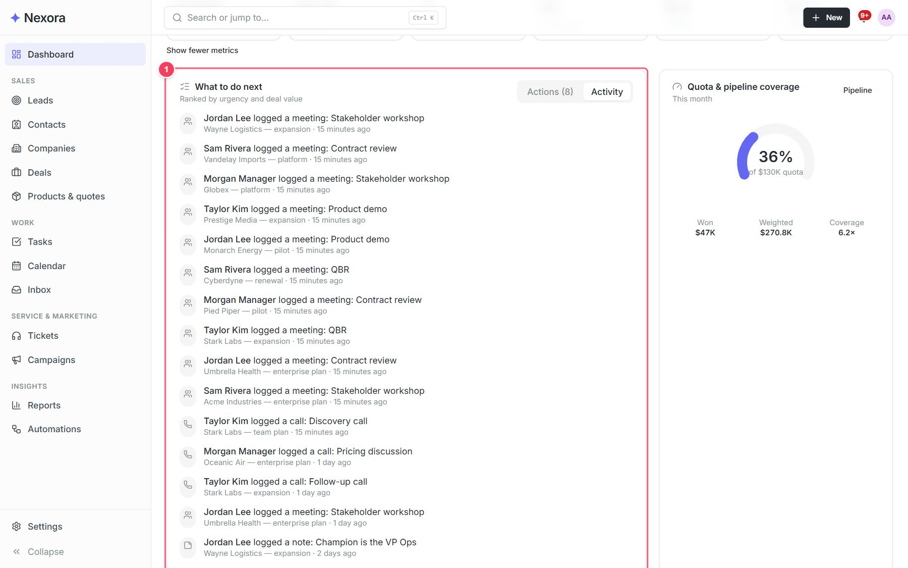
The Activity tab: recent calls, emails, meetings and notes.
Label
Why it appears
Support SLA
A support ticket has passed, or is within 4 hours of, its deadline.
Overdue task
A task’s due date has passed.
Closing soon
A deal is expected to close within 7 days.
Stalled deal
Nobody has touched a deal for 14 days or more.
At risk
A deal shows two or more warning signs (chapter 14).
Lead follow-up
A new lead has waited over an hour for a first response.
Hover over an item to reveal shortcuts: 📞 Log a call or ☑ Create follow-up task.
Rookie tipStart every morning by working down “What to do next” from the top. It is already sorted by urgency and deal size.
Heads upThe quota gauge only works once an admin sets monthly quotas for people (chapter 23). Coverage below 3× shows a warning: you probably need more deals to hit target.
Chapter 7
Lists: search, filter, sort and bulk actions
Leads, Contacts, Companies, Deals (list view), Tickets and Products all use the same kind of table. Learn it once and you know them all.
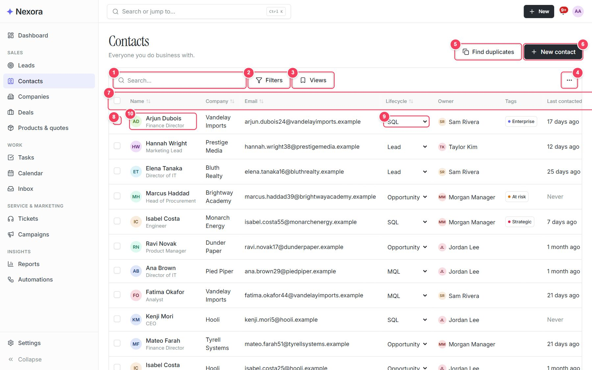
Search: type part of a name, email, phone or company. Results update as you type.
Filters: narrow the list (by stage, owner, source, dates…).
Views: save the current search and filters to reuse later.
⋯ More: Export CSV (download to Excel) and Import CSV (upload many records at once).
Find duplicates (contacts only, chapter 8).
New contact: add one record by hand.
Column headers: click one with ⇅ arrows to sort; click again to reverse.
Checkbox: select rows for bulk actions. The box in the header selects the whole page.
Inline edit: some columns are drop-downs. Change the value right in the table; it saves instantly.
Name: click any row (or the name) to open the record.
The bottom of the list shows “1–25 of 60” and arrows to page through 25 records at a time.
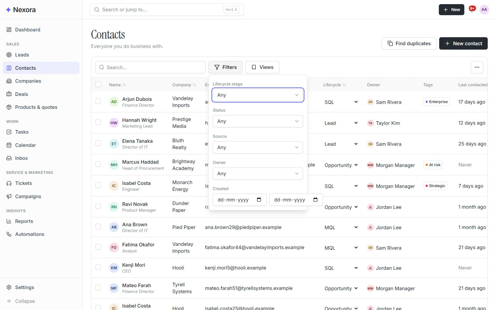
Filters. “Me” and “Unassigned” are handy owner choices.
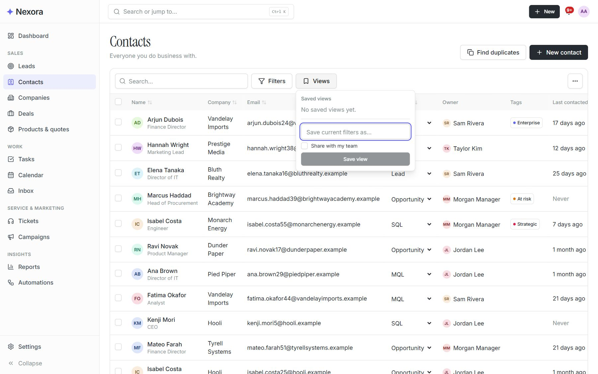
Saved views. Tick “Share with my team” to share.
Bulk actions
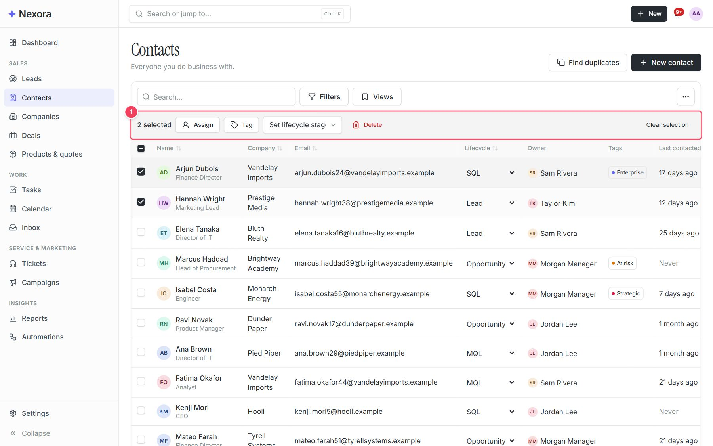
Bulk bar: appears when rows are ticked. Assign them to someone, add a Tag, change a status/stage for all of them, or Delete. Clear selection unticks everything.
Import and export CSV
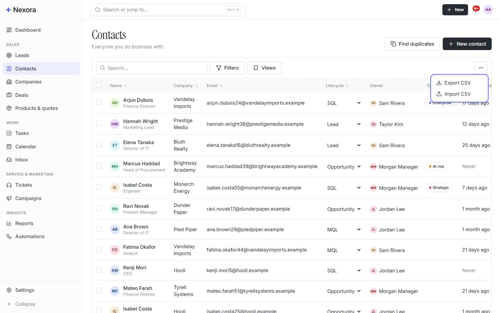
The ⋯ menu.
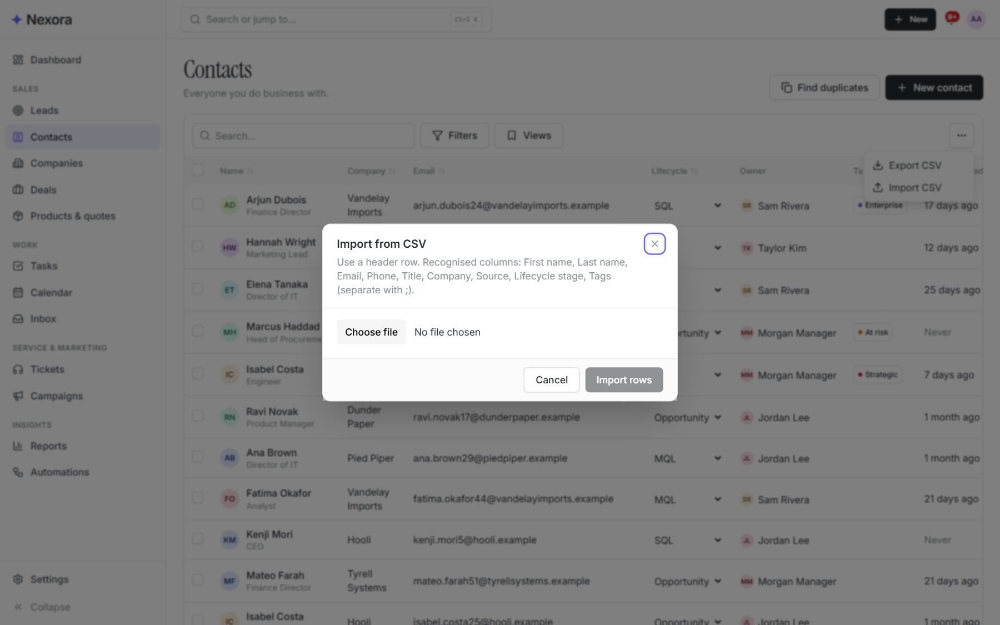
Import from CSV.
Export: ⋯ → Export CSV downloads exactly what you see (search and filters included). Opens in Excel or Google Sheets.
Import: ⋯ → Import CSV → choose a file whose first row has column names (e.g. First name, Last name, Email, Company).
Check the preview of the first 5 rows, then click Import (up to 5,000 rows at a time).
Nexora reports how many were imported and lists any skipped rows with the reason (e.g. “Email: Enter a valid email”).
Heads upBy default only managers and admins can import, delete in bulk and assign records to other people. Everyone can export.
Chapter 8
Contacts
Contacts are the people you do business with. The list works as described in chapter 7.
Add a contact
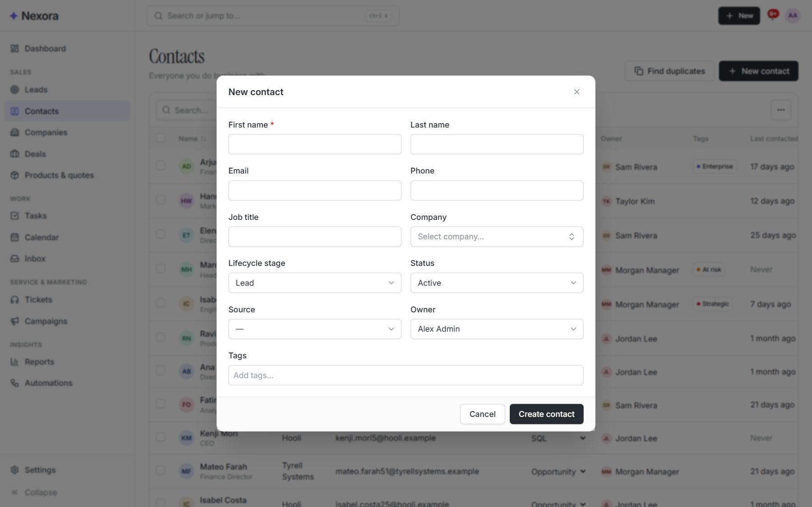
Click New contact (or + New → Contact).
Only First name is required (marked with *). Add last name, email, phone and job title.
Company: start typing and pick from the list. Add the company first if it’s not there.
Lifecycle stage says how far along they are: Subscriber → Lead → MQL → SQL → Opportunity → Customer → Evangelist. Winning a deal moves the contact to Customer automatically.
Set the owner (you, by default), the source they came from, and tags (type a word, press Enter).
Click Create contact. Its 360° page opens.
Find and merge duplicates
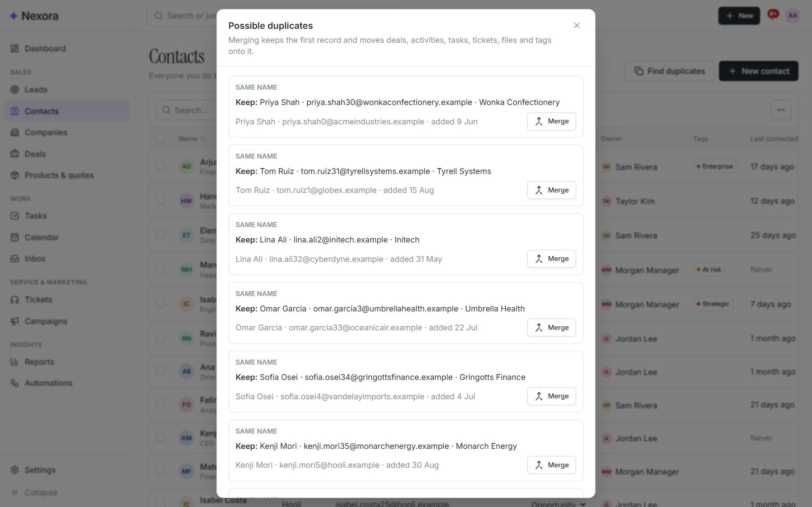
On Contacts, click Find duplicates. Nexora groups people with the same email or the same full name.
“Keep” shows the oldest record. Click Merge beside a duplicate.
Everything attached to the duplicate (deals, activities, tasks, tickets, files, tags) moves to the kept contact, empty fields are filled in, and the duplicate is removed.
Heads upMerging happens immediately, with no “are you sure?” step. Double-check the two records first.
Chapter 9
A contact’s 360° page
Everything about one person on a single screen: details, company, deals, conversations, tasks, support tickets and files.
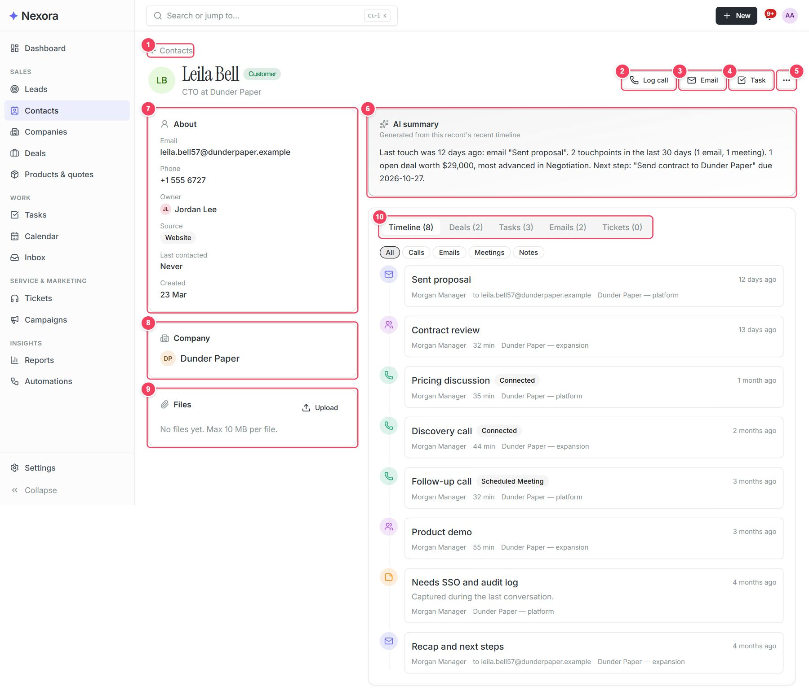
← Contacts: back to the list.
Log call: record a phone call (chapter 10).
Email: write an email to this person.
Task: create a to-do linked to this person.
⋯: log a meeting, add a note, edit or delete.
AI summary: a plain-English recap: when you last spoke, how often, open deals, open tickets and the next planned step.
About: email (click to write), phone (click to call), owner, source, last contacted, tags and custom fields.
Company: click to open the company page.
Files: Upload documents (up to 10 MB each); click a name to download.
Tabs: Timeline (all activity), Deals, Tasks, Emails and Tickets. Numbers show how many.
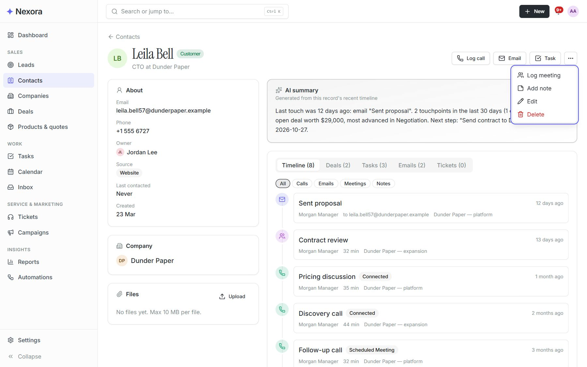
The ⋯ menu on a record.
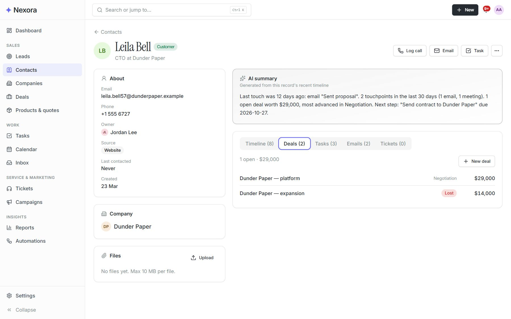
The Deals tab: New deal creates one already linked to this person.
Rookie tipBefore calling anyone, read their AI summary and timeline. You’ll know what was said last time in ten seconds.
Chapter 10
Logging calls, emails, meetings, notes and tasks
These buttons appear on every contact, company, lead, deal and ticket page. Whatever you log is saved on that record’s timeline.
Log a call, meeting or note
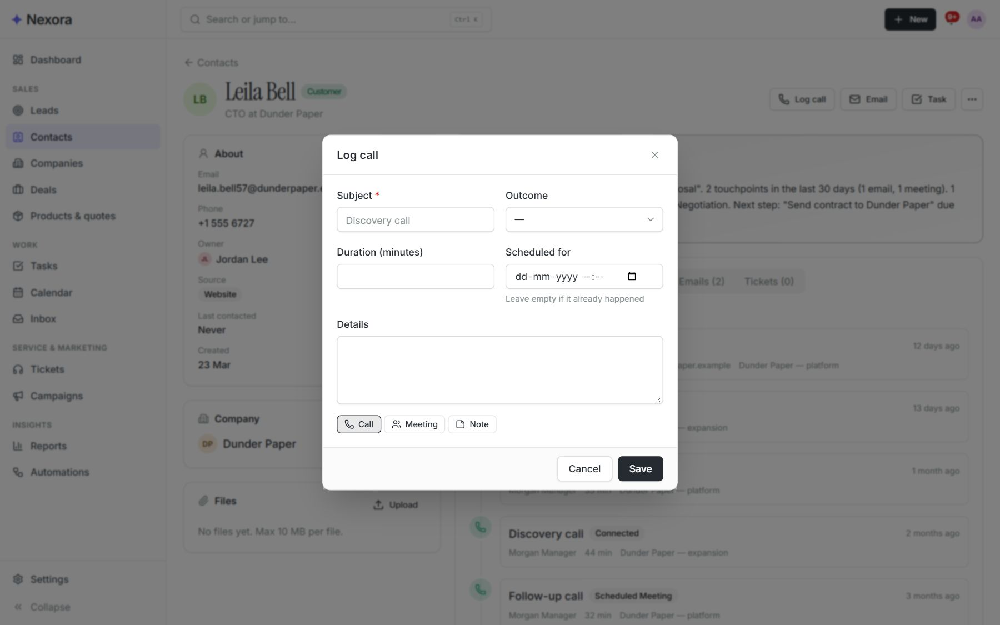
Click Log call (or ⋯ → Log meeting / Add note). Switch between Call, Meeting and Note with the buttons at the bottom.
Type a Subject (e.g. “Discovery call”) and any Details.
For calls, choose the Outcome (connected, voicemail, no answer…) and Duration in minutes.
Planning something for later? Fill in Scheduled for. It then shows on the calendar with a Mark done button. Leave it empty if it already happened.
Click Save.
Good to knowLogging a call, email or meeting automatically updates the contact’s “last contacted” date, keeps the deal from being flagged as “gone quiet”, and for leads records the first response and raises their score.
Write an email
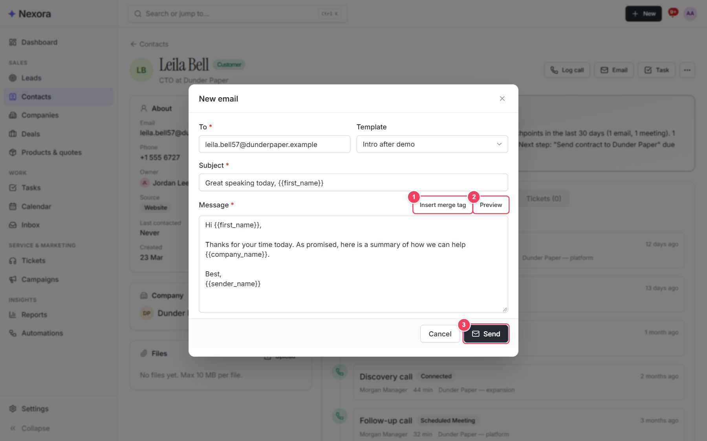
The email composer with a template chosen.
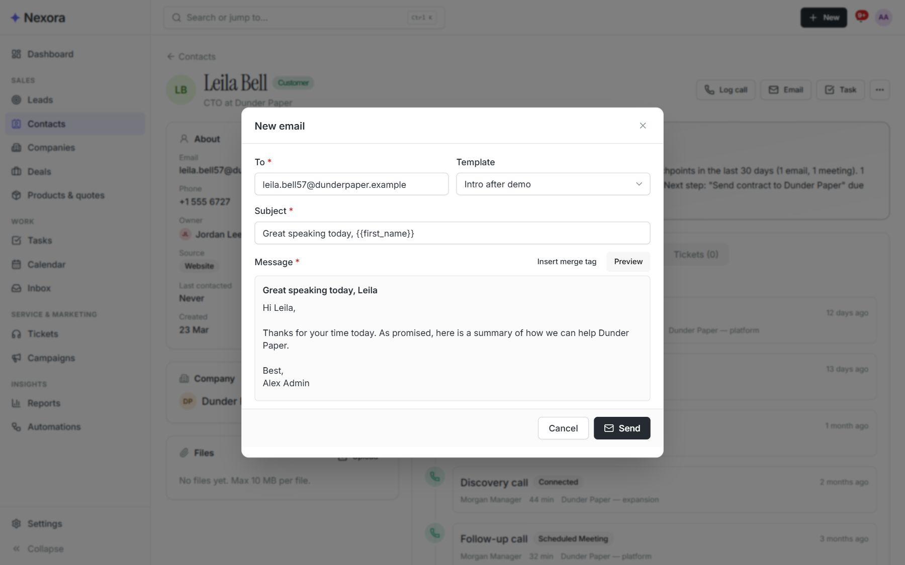
Preview: merge tags replaced with real values.
Insert merge tag: adds a placeholder like {{first_name}} that becomes the real value when sent.
Preview: shows exactly what the recipient will see.
Send: sends it and saves it on the timeline and in your Inbox.
Pick a Template at the top right to fill in the subject and body (chapter 18).
Create a task
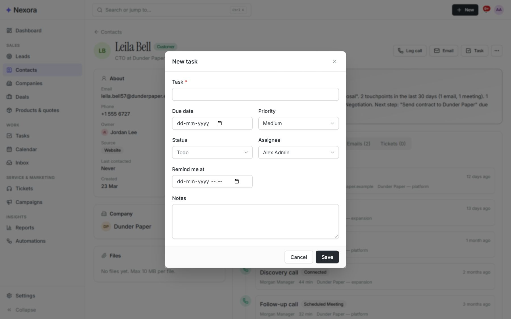
Give it a title, due date, priority (low, medium, high, urgent), status and assignee. Remind me at sends a notification at that time. Tasks created from a record stay linked to it.
Chapter 11
Companies
The organizations your contacts work for and your deals are with.
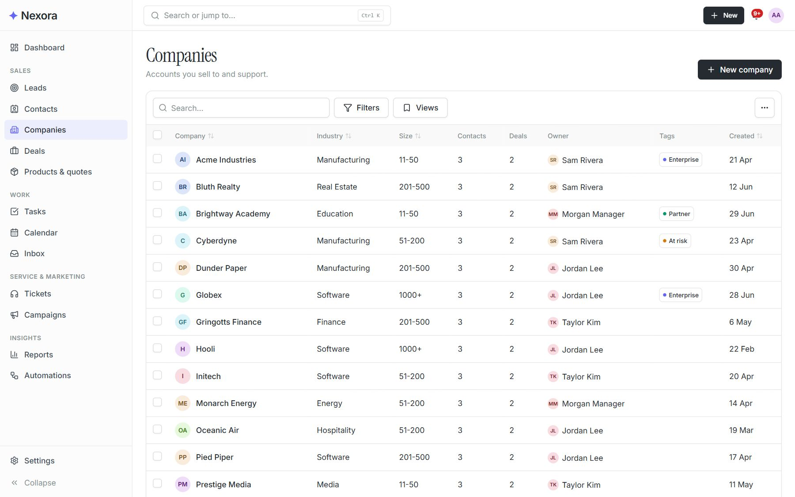
The companies list shows how many contacts and deals each has.
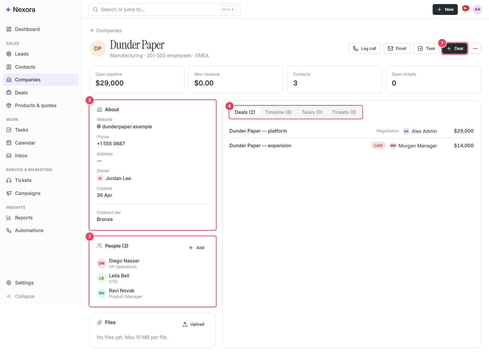
Deal: start a new deal with this company already filled in.
About: website, phone, address, owner, tags and custom fields.
People: everyone who works there. + Add creates a new contact at this company.
Tabs: the company’s deals, timeline, tasks and tickets.
The four numbers at the top give an instant health check: open pipeline, won revenue, contacts and open tickets.
Rookie tipYou rarely need to create companies by hand: converting a lead, or importing contacts with a “Company” column, creates them for you.
Chapter 12
Leads
Leads are possible customers you haven’t qualified yet. Nexora scores each one and can share them out across your team automatically.
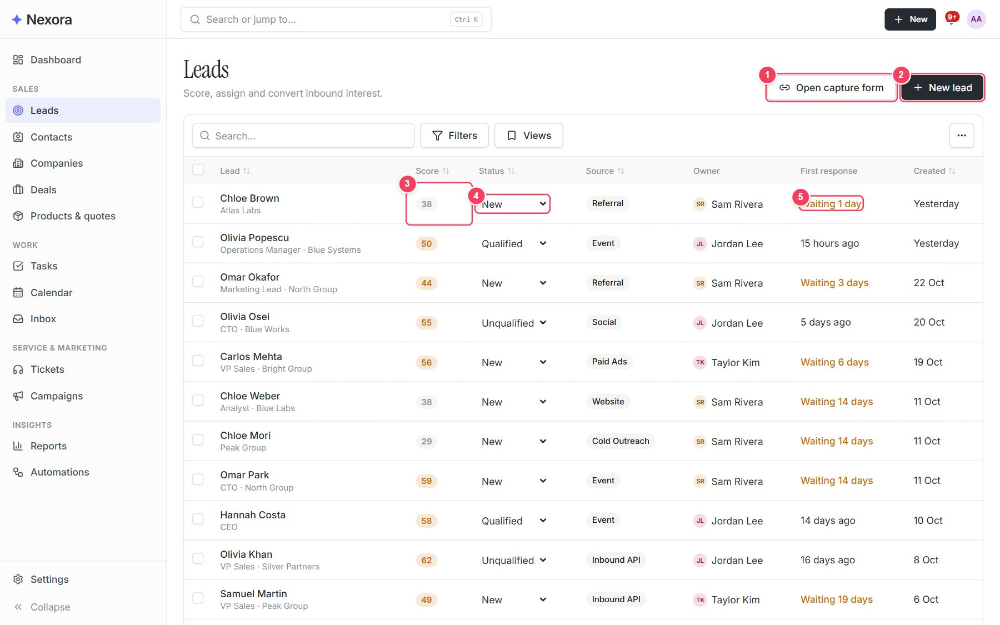
Open capture form (admins): your public web form; anything submitted becomes a lead.
New lead: add one by hand.
Score (0–100): how promising the lead is. 🔥 70+ is hot, amber is warm, grey is cold.
Status: New → Contacted → Qualified (or Unqualified). Change it inline.
First response: amber “Waiting…” means nobody has contacted them yet.
The lead page
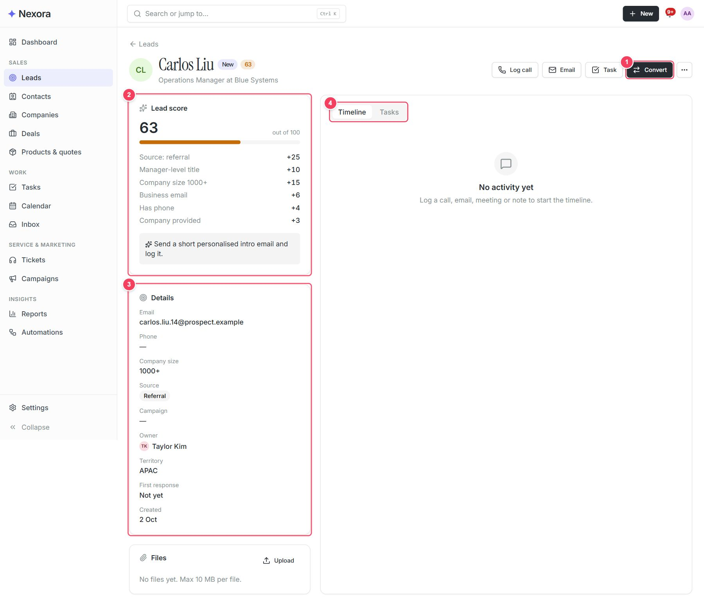
Convert: turn the lead into a contact (and usually a deal).
Lead score: the score, a bar, exactly where each point came from, and an AI suggestion for your next move.
Details: contact info, source, campaign, owner, territory and when they were first contacted.
Work email 6 (Gmail-type 3) · Phone 4 · Company 3 · Left a message 5
Engagement
+4 for every call, email or meeting you log, up to 20
Convert a lead
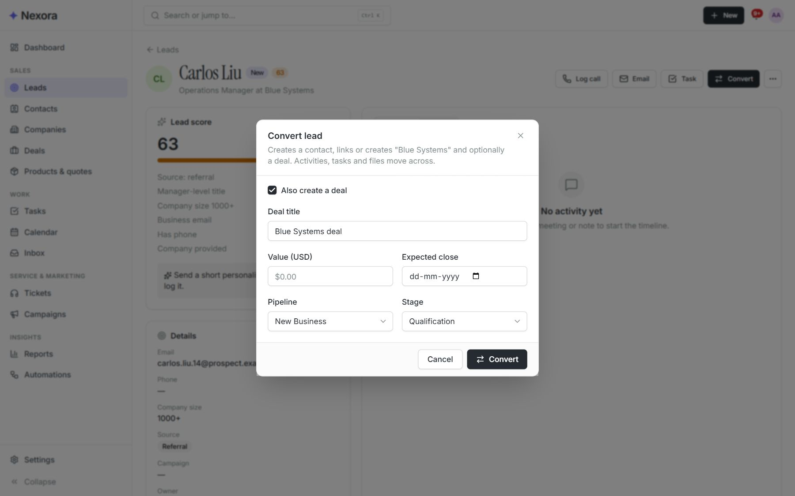
On the lead page click Convert.
Keep Also create a deal ticked if there’s a real sales opportunity. Set the deal title, value, expected close date, pipeline and stage.
Click Convert. Nexora creates the contact, finds or creates the company, creates the deal, and moves the lead’s history over. You land on the new deal.
Good to knowLeads arriving through the web form are assigned automatically, taking turns among the sales reps (or by territory), and the new owner gets a notification. Admins choose the rule in Settings → Organization.
Chapter 13
Deals: the pipeline board
The board shows every open deal as a card in its stage column. Moving a card is how you show progress.
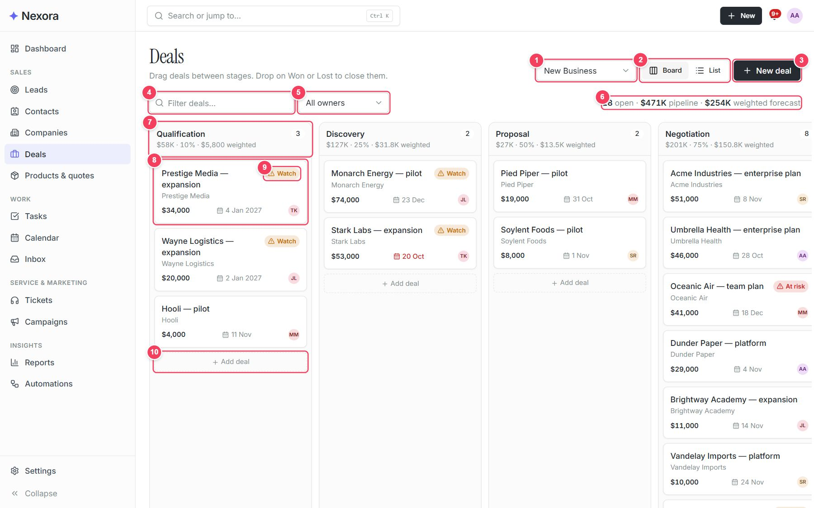
Pipeline: switch pipeline if your company has more than one (e.g. New Business vs Renewals).
Board / List: choose cards or a table (your choice is remembered).
New deal.
Filter deals: type to show only matching cards.
Owner: show everyone’s deals, only yours, or one person’s.
Totals: open deals, total pipeline value and weighted forecast (realistic expected revenue).
Column header: stage name, number of deals, total value, win probability and weighted value.
Deal card: title, company, value, expected close date (red when overdue) and owner initials. Click the title to open it.
Risk flag: amber Watch or red At risk. Hover to see why.
+ Add deal: new deal starting in this stage.
Move a deal by dragging
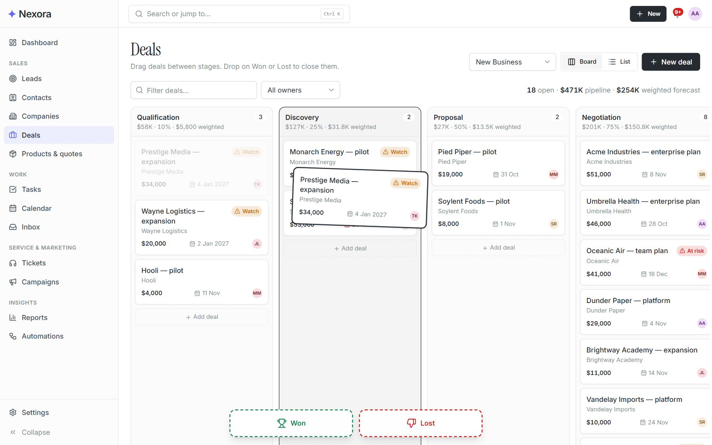
While you drag, Won and Lost drop zones appear at the bottom.
Press and hold on a card (anywhere except its title) and drag it to another column. Let go to drop it. It saves instantly.
Drop on Won to mark it won 🎉, or on Lost, where you’re asked for the reason.
If saving fails (for example, you lost internet), the card jumps back and an error appears.
List view
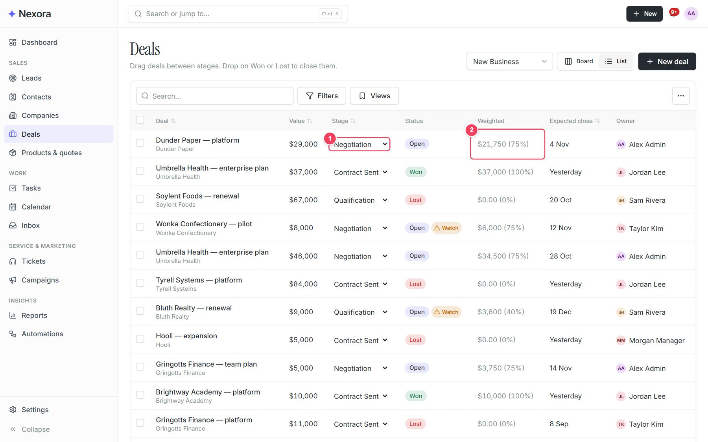
Stage: change the stage right in the table.
Weighted: value × probability, with the % in brackets.
Chapter 14
A deal’s page
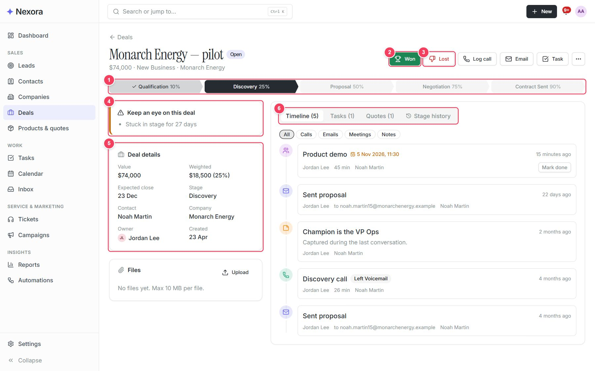
Stage path: the deal’s journey. Click any stage to move it there. ✓ marks completed stages.
Won: mark the deal won. Revenue appears on dashboards and the contact becomes a Customer.
Lost: mark it lost and pick a reason. Closed deals show Reopen instead.
Risk card: appears when something looks wrong, and says what.
One sign = amber Watch. Two or more = red At risk.
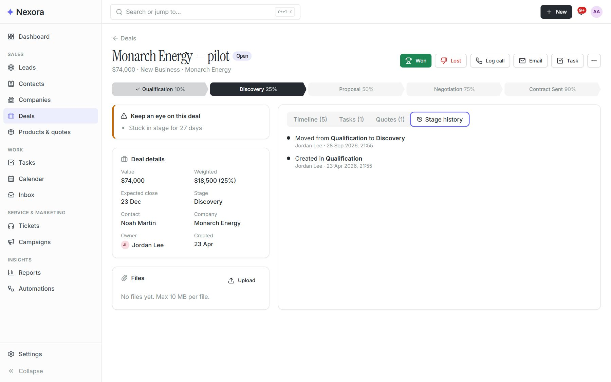
Stage history: who moved it, when, from where.
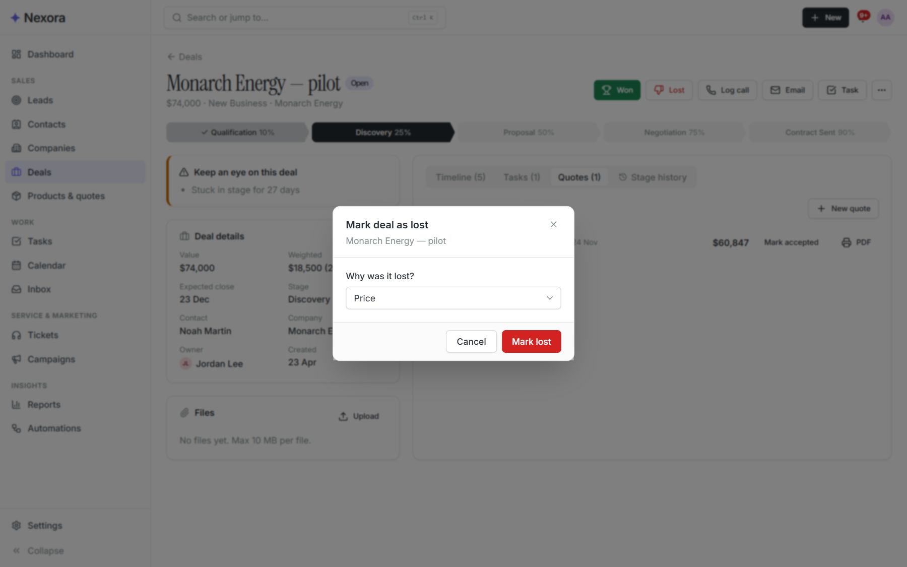
Marking a deal lost asks for a reason.
Loss reasons: Price, Competitor, No budget, No decision, Timing, Missing features, Went silent, Other. The Lost-reason report (chapter 21) shows which ones hurt most.
Chapter 15
Products and quotes
Keep a price list, then build accurate quotes for a deal in a minute.
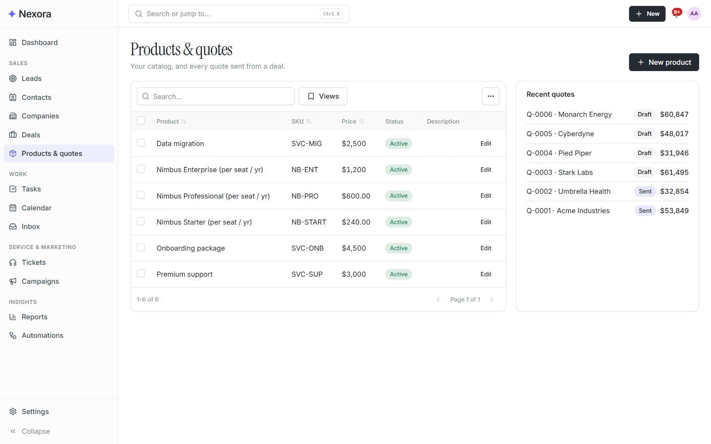
Products & quotes: your catalog (left) and recent quotes (right).
Managers add products with New product: name, SKU (product code), unit price, description and whether it’s active.
Make a quote
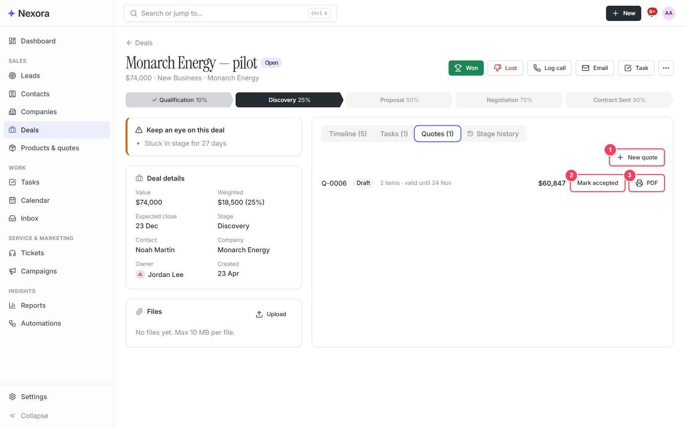
New quote: opens the quote editor.
Mark accepted: the customer said yes. The deal’s value is updated to the quote total.
PDF: opens a printable quote to save as PDF and send.
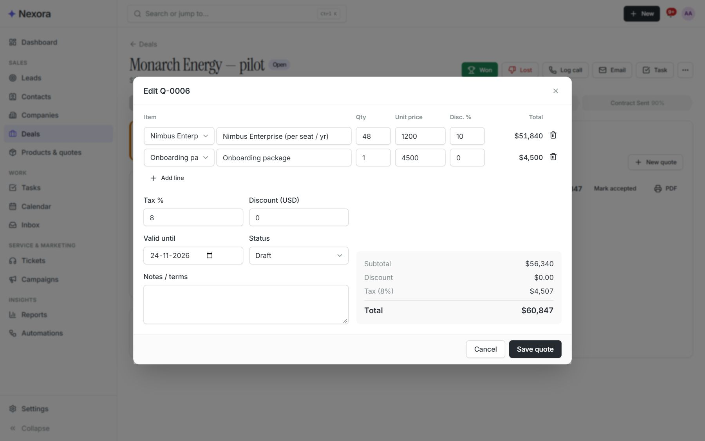
For each line, pick a product (name and price fill in) or Custom item. Set quantity, unit price and optional discount %. Add line for more.
Set Tax %, an overall Discount amount, Valid until, the status and any notes or terms.
The totals box updates as you type: subtotal − discount + tax = total.
Click Create quote. Quotes are numbered Q-0001, Q-0002…
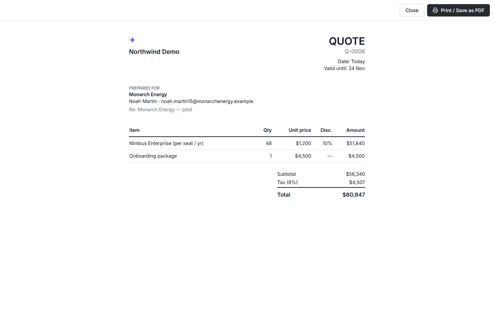
The printable quote. Click Print / Save as PDF and choose “Save as PDF”.
Chapter 16
Tasks
Your personal to-do list for customer work, sorted by what’s due.
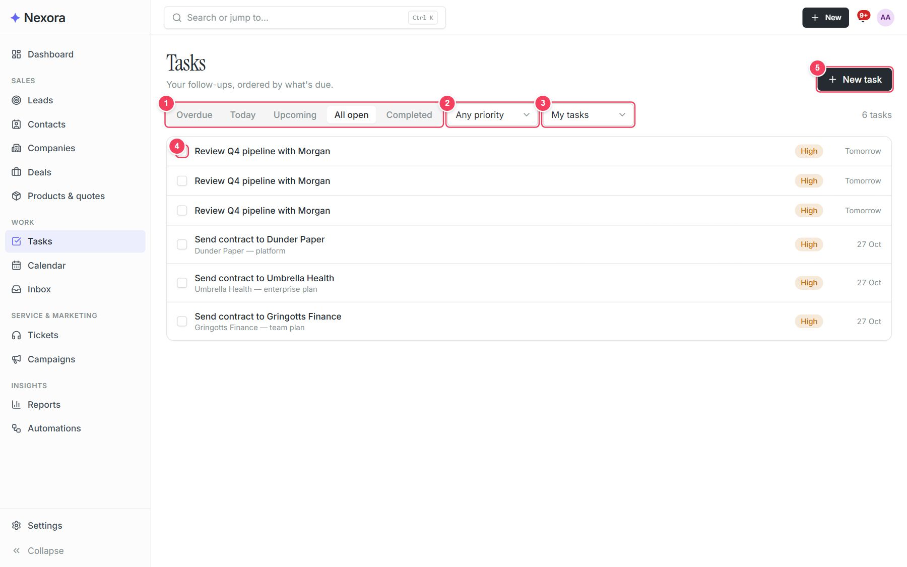
Views: Overdue (red count), Today, Upcoming, All open and Completed.
Priority filter: show only urgent, high… tasks.
My tasks / Team tasks (managers and admins).
Checkbox: tick to complete. An Undo button appears for a few seconds.
New task.
Click a task’s title to edit it. The small link under it opens the related deal or contact. Dates in red are overdue.
Rookie tipEvery time you finish a call, create the next task before you hang up mentally: “Follow up Tuesday”. Deals rarely die when there’s always a next step.
Chapter 17
Calendar
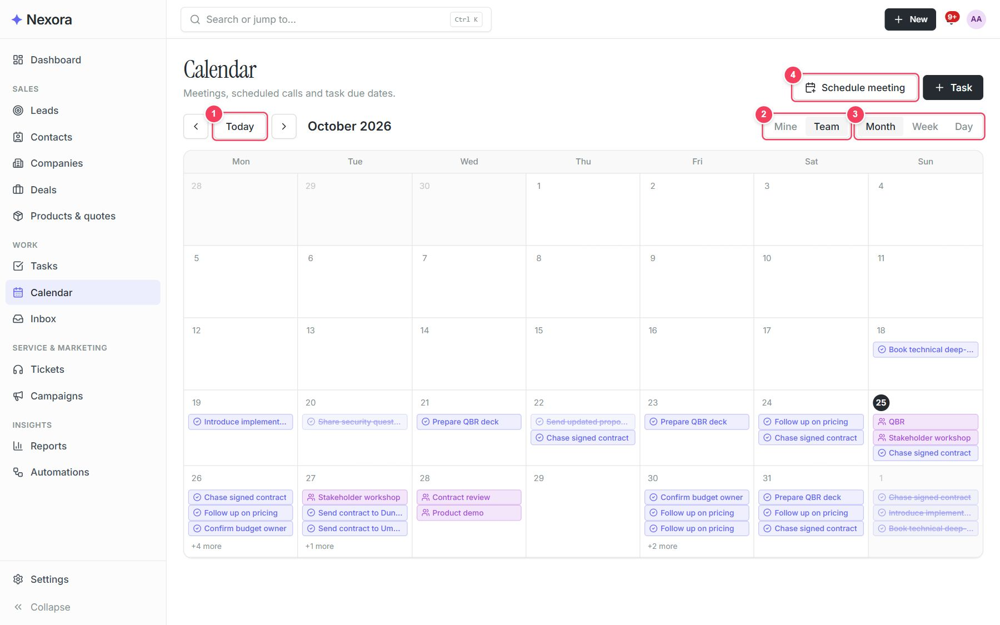
Today: jump back to today. The arrows beside it go backward and forward.
Mine / Team: only your items, or everyone’s you’re allowed to see.
Month / Week / Day views.
Schedule meeting: log a future meeting with a date and time.
Coloured chips: meetings (purple), calls (green), tasks (blue). Click a chip to open its deal or contact. In Month view, click a date number to see that day, or the small + on a day to add a task due that day.
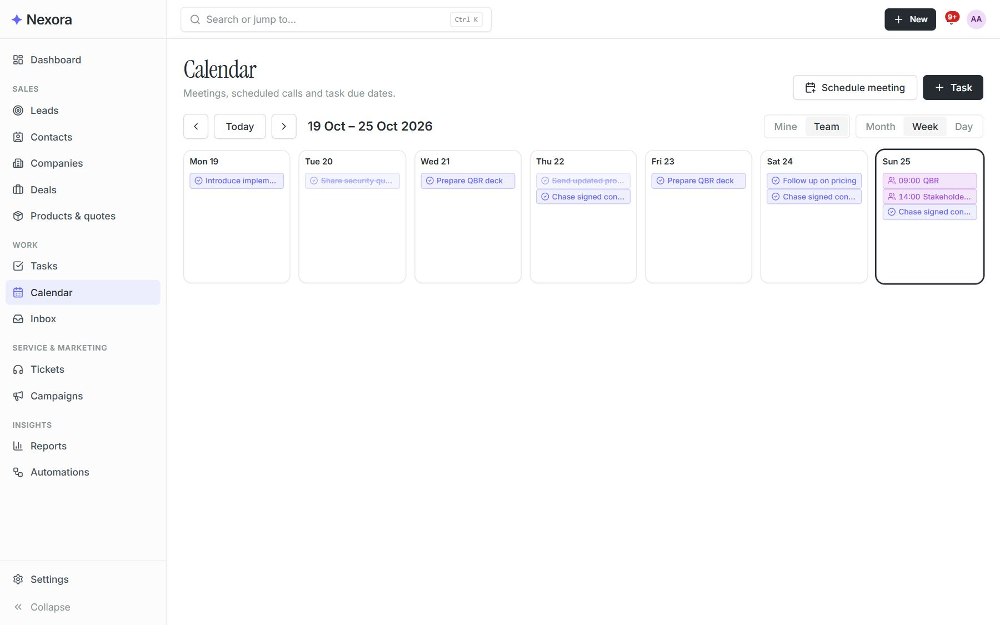
Week view.
Chapter 18
Inbox and email templates
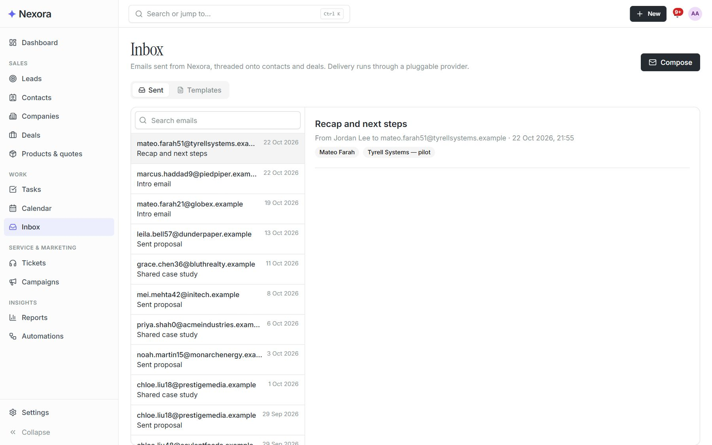
Inbox → Sent: every email sent from Nexora. Click one on the left to read it on the right.
Use Compose (top right) to write a new email from here. The email is linked to the matching contact and deal.
Templates
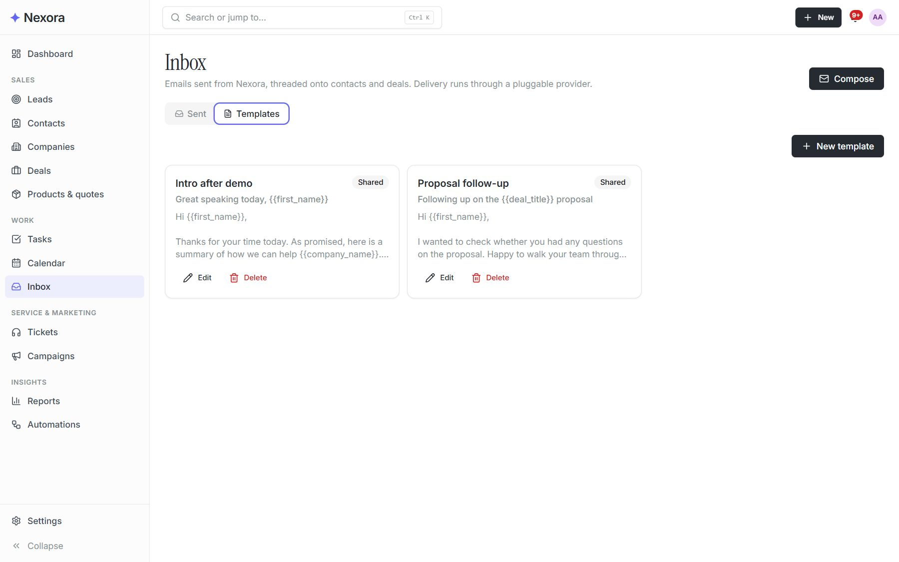
Inbox → Templates → New template.
Give it a name, subject and body. Use merge tags so each email is personal.
Managers can tick Share with the whole team; everyone can make personal templates.
Merge tag
Becomes
{{first_name}}{{last_name}}{{full_name}}
The person’s name
{{company_name}}{{title}}{{email}}
Their company, job title and email
{{deal_title}}{{deal_value}}
The linked deal
{{sender_name}}{{sender_email}}
You
Heads upOut of the box, emails are saved in Nexora but not actually delivered (you’ll see “Email logged (dev mode)”). Your administrator connects a real mail service to send them.
Chapter 19
Support tickets
When a customer needs help, create a ticket so it’s tracked against a deadline (the SLA, or service-level agreement).
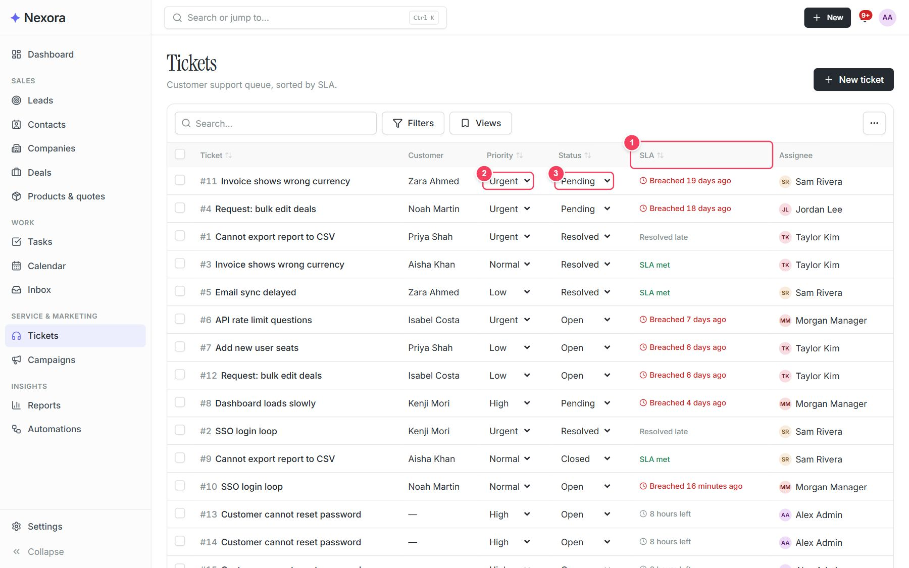
SLA: time left before the deadline. Grey = fine, amber = under 2 hours, red = missed (“Breached”).
Priority: change inline. Higher priority means a shorter deadline.
Status: Open → Pending (waiting on the customer) → Resolved → Closed.
Priority
Urgent
High
Normal
Low
Must be resolved within
4 hours
8 hours
24 hours
72 hours
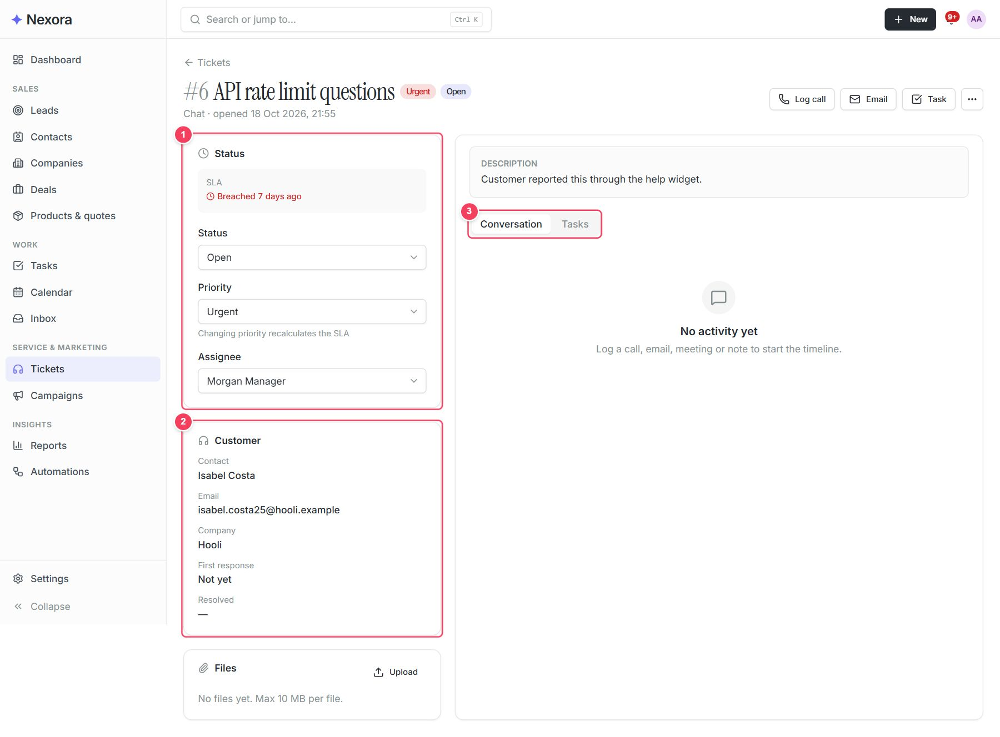
Status panel: live SLA timer, and drop-downs to change status, priority (recalculates the deadline) and assignee.
Customer: contact, email, company, first-response and resolved times.
Conversation / Tasks: every reply you log, and follow-ups.
Reply using Email or Log call at the top. Your first reply records the “first response” time. Tickets also appear on the customer’s contact page.
Chapter 20
Campaigns
See which marketing efforts actually bring in money.
Managers click New campaign: name, channel (email, social, paid search, events, content, webinar, partner), status, dates and budget.
When adding a lead or deal, choose the campaign it came from. Deals converted from a lead keep the lead’s campaign.
Each card then shows leads, deals won, revenue, budget, cost per lead (budget ÷ leads) and ROI ((revenue − budget) ÷ budget). Green ROI = it paid for itself.
Click a campaign’s name to see its leads, best scores first.
Chapter 21
Reports
Six ready-made reports, plus a builder to answer your own questions. No spreadsheets needed.
Report
Answers the question…
Sales by rep
Who is winning, how much, at what win rate, and against quota?
Pipeline health
Where are deals piling up, getting old or slipping past their dates?
Conversion funnel
How many leads got contacted, qualified, converted and won?
Activity report
How many calls, emails, meetings and notes did each person log?
Forecast
How much will probably close each month (weighted, commit, best case)?
Lost-reason analysis
Why are we losing deals?
Pick the date range at the top. Each report has a CSV button; Export PDF (top right) prints the whole page.
Build your own report
Records: what to count: deals, leads, contacts, companies, activities, tasks or tickets. Then choose the Metric: count, sum or average.
Group by: how to split the result (by stage, owner, source, month…).
Add filter: e.g. status equals won.
Run: shows a chart and a table.
Save (managers): keep it, and optionally email it daily, weekly or monthly.
Saved reports: Run, Email now or delete.
Chapter 22
Automations
Rules that work for you: when something happens, if conditions are true, then do something. For example, “when a deal reaches Negotiation, create a ‘Send contract’ task for its owner”.
New workflow: build a rule from scratch (managers).
On/off switch: pause or resume a rule.
Runs: history of every time it ran and what happened.
A deal is created / moves to a stage / is won / is lost · A lead is created / converted · A contact is created · A ticket is created / changes status.
2 · Only if (optional)
Field + operator (equals, not equals, greater than, less than, contains) + value. E.g. Stage name equals Negotiation, Value greater than 50000.
3 · Then (actions)
Create task (for the owner, their manager or anyone) · Notify user · Assign owner · Update field · Send email from a template.
Merge tags in actions
Task titles and messages can include {{name}}, {{company_name}}, {{full_name}}, {{stage}}…
Run history: success, skipped (conditions not met) or failed, with a message.
Chapter 23
Settings (mostly for admins)
Open Settings from the bottom of the sidebar or your avatar menu. You only see the sections your role allows.
Profile (everyone)
Change your name, email and avatar picture link, your password (this signs you out on other devices) and the theme.
Organization
Company name, default currency, which currencies deals may use, the month your financial year starts, and how new web leads are assigned: round-robin (taking turns) or by territory.
Users & quotas
Add user: name, email, role, a temporary password, monthly quota and territory. Share the password with them securely.
Edit changes someone’s role, team, quota or territory, or deactivates them (they’re signed out immediately).
Teams
Create teams and pick a manager. Managers can see their team’s records, tasks and the Team dashboard. Put people into teams from Users & quotas.
Roles & permissions
Tick or untick what Sales Reps and Managers may do. Admins always have everything. The rules are enforced by the server, so hidden buttons are not the only protection.
Pipelines
New pipeline or Edit stages on an existing one.
Drag the ⋮⋮ handle to reorder stages, rename them and set each stage’s win %.
Add stage or remove one with the bin icon. A stage that still has deals can’t be removed until they’re moved.
Make default chooses which pipeline opens first.
Custom fields
Add your own fields to contacts, companies, leads, deals or tickets: text, number, date, drop-down list or checkbox, optionally required. They appear on the forms and record pages automatically.
Tags
Create tags, change their colour, see how often each is used, and delete unused ones. Tags typed on a record are created automatically.
Lead capture & API
Your hosted form link (share it or put it on your website), the API endpoint for developers, and an example request. Rotate key creates a new link and disables the old one.
What visitors see on your hosted form. Submissions become scored, auto-assigned leads.
Audit log
A permanent record of who did what and when: every create, update, delete, merge, import, export, sign-in and settings change. Filter by record type or person, and click the arrow on an entry to see exactly which fields changed, from what to what.
Chapter 24
Roles: what each person can do
Role
Sees
Typical person
Sales Rep
Only their own records
Salespeople, support agents
Manager
Their team’s records plus unassigned ones
Team leads
Admin / Executive
Everything in the company
Owners, executives, ops
A sales rep’s dashboard: only “My dashboard”, only their own numbers.Sections you can’t use say “Not available” instead of showing other people’s data.
Default permissions
Permission
Rep
Manager
Admin
Export to CSV
✓
✓
✓
Delete records · Import CSV · Reassign to others
—
✓
✓
See teammates’ records · Team dashboards & reports
Everyone can create and edit the records they can see, log activities, manage their own tasks, send email and make personal templates. Admins can change these defaults (chapter 23).
Chapter 25
Dark mode, phones and tablets
Dark mode: avatar menu → Dark (or System to follow your computer).
On a phone, the menu hides behind the ☰ button at the top left. Everything else works the same; tables scroll sideways inside their card.
Heads upDragging deal cards needs a mouse or long-press-and-drag. On phones it’s often easier to open the deal and tap a stage on its stage path.
Chapter 26
A full day in Nexora
Putting it all together, from first lead to happy customer.
Morning
Open the Dashboard. Work down What to do next: overdue tasks, urgent tickets, deals closing this week.
Check the bell for new leads assigned to you overnight.
Working a new lead
Open the lead (🔥 hot ones first). Read its score breakdown and AI suggestion.
Call them, then Log call: outcome, notes. The lead becomes Contacted.
If there’s a real opportunity, click Convert with Also create a deal, and set the value and close date.
Moving a deal forward
On the Deals board, drag the deal to Discovery after your first proper meeting.
In the deal’s Quotes tab, build a quote from your products; open PDF and send it. Drag the deal to Proposal.
Use Email with a template to follow up. Add a Task “Check in on Friday”.
When they negotiate, drag to Negotiation. An automation can create your “Send contract” task.
They sign: Mark accepted on the quote, then Won 🎉. The contact becomes a Customer and the dashboard updates.
After the sale
The customer has a problem: create a Ticket from their contact page and resolve it before the SLA turns red.
End of week: managers open Reports → Sales by rep and Pipeline health, and the Team dashboard for quota coverage.
Chapter 27
Troubleshooting and FAQ
Problem
What to do
“You don’t have permission to do that”
Your role doesn’t include that action. Ask an admin (chapter 24).
I can’t find a record a colleague mentioned
Reps only see their own records. Ask the owner or a manager to reassign it to you.
“Can’t reach the server right now”
The server is restarting or offline. Click Try again after a moment.
My numbers are all zero
Check the date range and My/Team toggle. A new account starts empty.
The quota gauge says “No quota set”
An admin needs to set monthly quotas in Settings → Users & quotas.
My email wasn’t received
Email delivery isn’t connected yet; the email is saved in Nexora only. Ask your admin.
Can’t delete a stage or pipeline
Move its deals to another stage first.
A deal shows “At risk”
Hover the flag to see why, then fix the cause (log activity, set a close date, move the stage).
Import skipped some rows
The import result lists each row and why (e.g. bad email). Fix the file and import just those rows again.
Keyboard shortcuts
Keys
Does
Ctrl/⌘ + K
Search and quick actions
↑↓ then Enter
Choose a search result
Esc
Close a window, menu or search
Enter or , in a Tags box
Add the tag (Backspace removes the last one)
Last rookie tipThree habits make a CRM useful: log every conversation, always have a next task on every open deal, and keep close dates honest. Everything else (dashboards, forecasts, AI hints) gets better automatically.